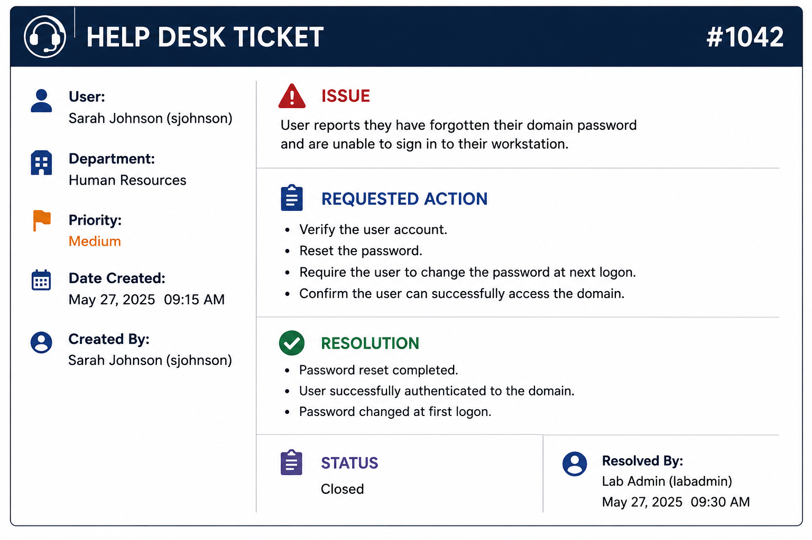
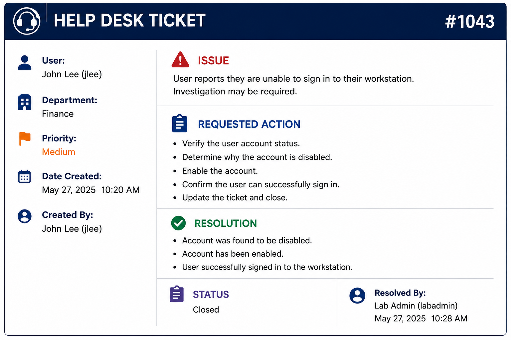

This lab demonstrates common Active Directory account administration tasks performed by IT Support and Help Desk professionals using Windows Server 2022. The lab simulates two real-world support tickets involving password management and user account administration within an Active Directory domain environment.
The following support ticket simulates a user who has forgotten their Active Directory password and is unable to access their domain workstation.

A HR department user contacted the IT Help Desk after forgetting their domain password. The account required a password reset, enforcement of a password change at next logon, and verification that the user could successfully authenticate to the domain.
The following video demonstrates the complete password reset process, including resetting the user's password in Active Directory, requiring a password change at next logon, and verifying successful authentication from a Windows 10 client.
The following support ticket demonstrates how a disabled Active Directory account is identified, re-enabled, and verified after the user reports being unable to sign in.

A user reported being unable to access their domain workstation. Investigation within Active Directory confirmed that the user account had been disabled. The account was re-enabled and access was successfully restored.
The following video demonstrates the investigation of the user account, enabling the disabled account within Active Directory Users and Computers, and verifying successful login from the Windows 10 client.
This lab demonstrates practical experience performing common Active Directory Help Desk tasks, including password resets, password management, user account administration, and verification of successful user authentication. These activities represent routine responsibilities performed by IT Support Technicians and Systems Administrators in enterprise Windows environments.